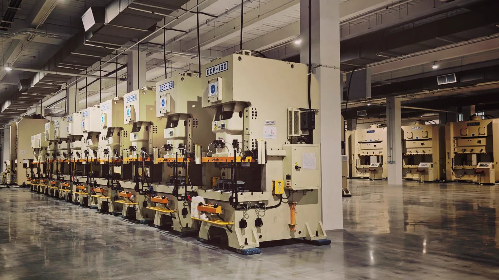
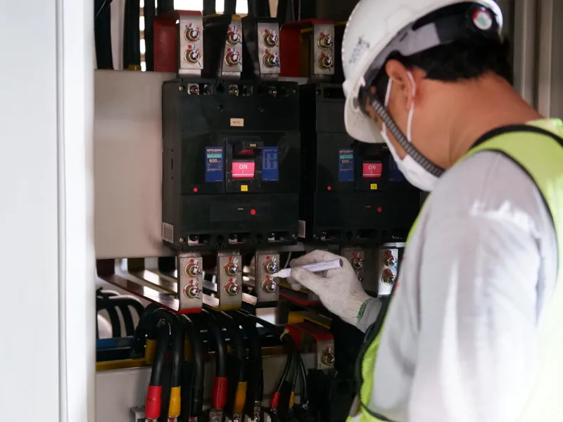
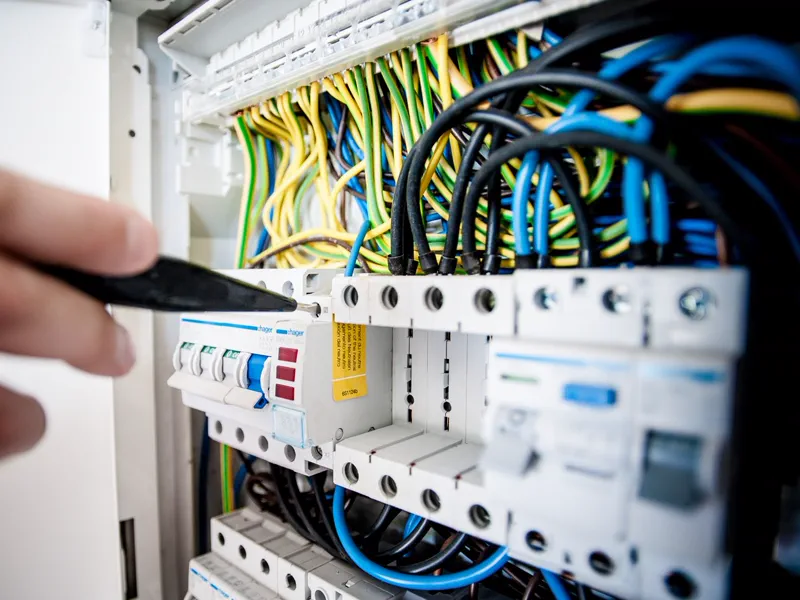
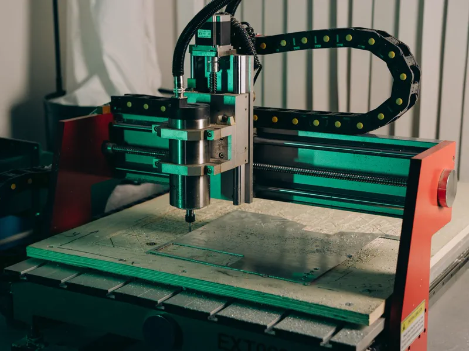
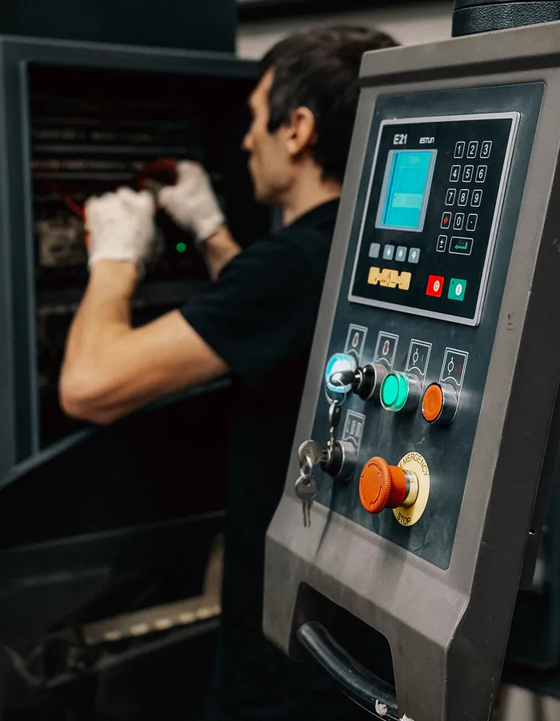
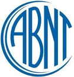

Inventário de máquinas
TAG, setor, unidade, fabricante, ano, número de série, tensão, potência, criticidade e foto. Zona de perigo identificada máquina a máquina.

O fluxo completo da norma, na ordem certa: do inventário de máquinas ao laudo com ART.
O Sistema NR12 é o software de segurança de máquinas e equipamentos que conduz a adequação inteira dentro de um método só: inventário por TAG e setor, checklist NR-12 pelo celular, apreciação de risco com HRN, categoria de segurança conforme a ABNT NBR 14153, plano de ação com prazo e laudo pronto para o profissional habilitado assinar. A parte elétrica da mesma máquina entra pelo módulo NR-10, sem cadastro duplicado.
Engenheiro responsável com ART registrada no CREA-ES · Implantação assistida nas primeiras máquinas
Na maior parte das autuações de NR-12 que atendemos, a máquina até tinha proteção. O que faltava era apreciação de risco assinada, categoria de segurança justificada, plano de ação com prazo e registro de treinamento válido. Sem esses papéis, a proteção instalada não conta. O Sistema NR12 nasceu para fechar essa porta.
Adequação de máquina que começa pela compra da proteção acaba em retrabalho. O sistema obriga a sequência técnica correta: primeiro identificar o perigo, depois estimar o risco, só então especificar a medida de proteção — e no fim provar que o risco residual ficou aceitável.
Cada máquina entra com TAG, setor, fabricante, ano, número de série, tensão, foto e criticidade. Torno, fresadora, serra circular, serra fita, prensa, guilhotina, dobradeira, calandra, injetora, extrusora, misturador, esteira, ponte rolante, compressor: o que tem zona de perigo entra no inventário. Máquina que não está na lista é a que aparece no auto de infração.
Checklist aplicado no celular, ao lado do equipamento: proteção fixa, proteção móvel intertravada, parada de emergência, distância de segurança, sinalização, dispositivo de partida, condição do painel. Cada não conformidade sai com foto anexada e já nasce ligada ao plano de ação daquela TAG.
Perigo identificado, risco estimado e risco avaliado — um registro por zona de perigo, não um por máquina. O sistema aplica o método HRN, que multiplica probabilidade de ocorrência, frequência de exposição, grau de dano possível e número de pessoas expostas, e guarda os quatro parâmetros escolhidos. É essa memória que sustenta a defesa técnica quando alguém questiona a decisão dois anos depois.
Gravidade do dano, frequência de exposição e possibilidade de evitar o dano entram no grafo de riscos e saem como categoria B, 1, 2, 3 ou 4. É essa categoria que define se basta uma proteção fixa ou se a máquina exige canal duplo com relé de segurança e autodiagnóstico — e é o número que mais gera divergência entre fornecedor e engenharia.
Com o risco estimado e a categoria definida, o sistema organiza a especificação: proteção fixa, proteção móvel com chave de segurança de acionamento positivo, cortina de luz com distância calculada pelo tempo de parada, comando bimanual, parada de emergência e dispositivo de bloqueio de energias. Sai projeto mecânico e elétrico, não improviso de serralheria.
Cada não conformidade vira item de plano com prazo, responsável, custo estimado e status. O gestor enxerga quantas máquinas estão adequadas, quantas estão em execução e quantas ainda não começaram — por setor e por unidade. É o documento que a fiscalização pede junto com o laudo.
Instalada a proteção, o risco é reavaliado com os mesmos parâmetros: o sistema mostra o risco residual lado a lado com o risco inicial. Medição do tempo de parada total, teste da função de segurança e, então, o laudo técnico de conformidade NR-12 montado para o profissional habilitado conferir, assinar e registrar a ART no CREA.
Adequação não é projeto com data de fim. O sistema controla reinspeção periódica, manutenção das proteções, validade dos treinamentos NR-12 e NR-10, revisão da apreciação de risco quando muda ferramental ou layout e o histórico completo por TAG.
Escolha a máquina, ajuste os parâmetros e veja na hora o HRN (pontuação de risco) e a categoria de segurança mínima sugerida pelo grafo de riscos da ABNT NBR 14153. É a mesma triagem que a engenharia faz antes de ir a campo — e é o que o Sistema NR12 executa em escala, para o parque inteiro.
Nada de painel bonito e vazio: cada tela existe porque a NR-12 ou a NR-10 pede um documento correspondente.
TAG, setor, unidade, fabricante, ano, número de série, tensão, potência, criticidade e foto. Zona de perigo identificada máquina a máquina.
Proteções, intertravamentos, parada de emergência, distâncias, sinalização e bloqueio, com Sim/Não/N/A e foto anexada a cada não conformidade.
Um registro por zona de perigo, com os quatro parâmetros do HRN guardados, faixa de risco e justificativa técnica escrita.
Grafo de riscos aplicado com S, F e P, resultado em categoria B a 4 e especificação do que o sistema de comando precisa ter.
Prazo, responsável, custo estimado e status por item. Visão por setor e por unidade, com percentual de conformidade do parque.
Manual, diagramas elétrico e pneumático, certificados das proteções, apreciação de risco, laudos e histórico de intervenções por TAG.
Capacitação de operador conforme NR-12, NR-10 básico e complementar SEP, com validade, alerta de vencimento e lista de presença anexada.
Laudo de conformidade NR-12 com inventário, riscos, categoria adotada, medidas e fotos, publicado no portal junto com a ART.
O painel de comando que a NR-12 exige intertravado é o mesmo painel que a NR-10 exige documentado. Tratar as duas normas em sistemas separados é o que faz o diagrama estar em um lugar e a análise de risco em outro. Aqui, máquina e instalação elétrica compartilham cadastro, histórico e prontuário.


Representação da interface do Sistema NR12, com dados de demonstração.
Cada equipamento vira um card com foto, TAG, setor, HRN da zona de perigo mais crítica, categoria de segurança adotada e o status de cada medida de proteção. O que está pendente aparece como pendente — não como espaço em branco.
No topo, o percentual de conformidade do parque por setor e por unidade. É o número que a diretoria pergunta e que ninguém consegue responder quando o controle vive em planilha.
Para cada zona de perigo o sistema registra o perigo identificado, os quatro parâmetros do HRN, a faixa de risco resultante e o caminho percorrido no grafo da NBR 14153 até a categoria. Nada de número que apareceu do nada no relatório.
Depois da proteção instalada, a mesma tela mostra o risco residual ao lado do risco inicial. Essa comparação é o que prova que a medida foi eficaz — e é exatamente o que falta na maioria dos laudos que revisamos.
Proteção fixa, proteção móvel, intertravamento, parada de emergência, distância de segurança, sinalização e dispositivo de bloqueio: tudo marcado no celular, ao lado da máquina, com foto tirada na hora e anexada à não conformidade.
Terminou a verificação, o checklist é salvo e cada "Não" já vira item de plano de ação com prazo sugerido. Acabou a prancheta transcrita dois dias depois, com foto que ninguém sabe de qual máquina era.
São os itens que aparecem em quase toda verificação de NR-12 que fazemos na Grande Vitória. O checklist do sistema começa por eles — e cada um vira item rastreável no plano de ação.
Zona onde a ferramenta trabalha a peça continua aberta. É a não conformidade mais comum e a que mais amputa dedo e mão.
Guarda tirada para "ganhar tempo" no set-up e nunca recolocada. Sem fixação por ferramenta, a proteção vira item opcional na prática.
Botão existe, mas está atrás da máquina, atrás de uma pilha de caixa ou não corta todas as energias. Vale como inexistente.
Sensor magnético comum burlado com ímã, chave sem abertura positiva e comando sem redundância na categoria exigida.
Cortina de luz instalada perto demais do ponto de operação, sem considerar o tempo de parada total da máquina.
Manutenção e limpeza feitas com a máquina energizada, sem procedimento de lockout/tagout nem dispositivo de bloqueio instalado.
Sem manual, sem diagrama elétrico e pneumático, sem certificado das proteções e sem histórico de intervenção na máquina.
Documento genérico, copiado de outra máquina ou sem profissional habilitado responsável. Não sustenta defesa técnica nenhuma.
Capacitação do operador sem conteúdo programático, sem carga horária, sem lista de presença — ou vencida há dois anos.


Máquina com fuso, guia linear e ferramenta acessíveis pela frente, sem enclausuramento e sem dispositivo de detecção. Em uma apreciação de risco, essa configuração costuma cair em S2 · F2 · P2 — gravidade alta, exposição frequente e sem chance de o operador desviar a tempo.
Resultado prático: categoria 4 no sistema de comando e proteção física antes de a máquina voltar a produzir. Use a calculadora acima com esses parâmetros e veja a pontuação.
O sistema atende quem executa a adequação e quem é dono do parque — com permissões separadas.
Padroniza o método de apreciação de risco entre engenheiros, elimina a planilha pessoal de cada um, monta o laudo em horas e entrega ao cliente por um portal com a sua marca. Todos os contratos em um só lugar, com histórico auditável.
Enxerga em uma tela quais máquinas estão adequadas, quais têm ação vencida e quais treinamentos vão vencer no mês. Fiscalização do MTE, seguradora e auditoria de cliente recebem o documento no mesmo dia.
Quatro passos. O primeiro é uma conversa de vinte minutos com a engenharia, não uma proposta de trinta páginas.
Conversa com a engenharia, contagem das máquinas e uma prioridade clara: qual setor tem o risco mais alto hoje.
Cadastramos junto com você as máquinas por TAG e setor, com foto, dados de placa e a documentação que já existe.
Checklist em campo pelo celular, apreciação de risco das zonas de perigo e plano de ação saindo no mesmo dia.
Plano acompanhado, risco residual reavaliado, treinamentos controlados e o laudo pronto para assinar.
Quem tem prensa e torno normalmente também tem painel elétrico sob NR-10 e, em boa parte dos casos, caldeira ou vaso de pressão sob NR-13. São três normas, três documentos e, quase sempre, três controles diferentes que ninguém consegue cruzar.
O Sistema NR12 resolve máquinas e instalações elétricas. Para equipamentos sob pressão, o Sistema NR13 faz o mesmo papel: prontuário digital, livro de registro automático e memória de cálculo conforme ASME Seção VIII. A mesma equipe, o mesmo método, dois sistemas que conversam.
O Sistema NR12 é apresentado rodando, com o seu inventário real na tela. Sem formulário longo, sem fila: a conversa começa no WhatsApp e quem responde é engenharia, não vendedor.
É um software online de gestão de segurança de máquinas. Ele conduz o fluxo completo da NR-12 na ordem que a norma pede: inventário das máquinas, checklist de verificação em campo, apreciação de risco com cálculo de HRN, definição da categoria de segurança conforme a ABNT NBR 14153, projeto das medidas de proteção, plano de ação com prazo e responsável, reavaliação do risco residual e emissão do laudo técnico para assinatura do profissional habilitado. O módulo NR-10 vem integrado, porque a parte elétrica da máquina é o mesmo ativo.
Não. A NR-12 exige profissional legalmente habilitado para a apreciação de risco, para o projeto das medidas de proteção e para o laudo, e isso não muda. O sistema padroniza o método, guarda a memória de cada decisão técnica, calcula HRN e categoria de segurança com os mesmos critérios em todas as máquinas e monta o documento. Quem responde tecnicamente continua sendo o engenheiro, com ART registrada no CREA.
O módulo NR-10 trata a instalação elétrica do mesmo parque: prontuário de instalações elétricas, diagramas unifilares, análise de risco elétrico com choque e arco elétrico, laudo de aterramento e continuidade, relatório de termografia dos painéis, procedimentos de bloqueio e etiquetagem de energias, delimitação de zona de risco e zona controlada, controle de EPI e EPC e validade dos treinamentos NR-10 básico e complementar SEP. Painel de comando de máquina aparece nos dois módulos, sem cadastro duplicado.
O nível de risco é estimado pelo método HRN, que multiplica a probabilidade de ocorrência, a frequência de exposição, o grau de dano possível e o número de pessoas expostas. A categoria mínima do sistema de comando sai do grafo de riscos da ABNT NBR 14153, alinhado à ISO 13849-1, combinando gravidade do dano, frequência de exposição e possibilidade de evitar o dano. A calculadora desta página usa exatamente esses dois métodos e serve como triagem preliminar.
Sim. O checklist de verificação foi desenhado para uso em campo: proteções fixas e móveis, intertravamentos, parada de emergência, distâncias de segurança, sinalização, dispositivos de bloqueio e condição do painel elétrico, com resposta Sim, Não ou N/A e foto de cada não conformidade. A não conformidade registrada já entra no plano de ação daquela máquina.
O sistema monta o laudo técnico de conformidade NR-12 com inventário, apreciação de risco, categoria de segurança adotada, medidas de proteção implantadas, risco residual e registro fotográfico, pronto para conferência e assinatura. A ART é registrada pelo profissional habilitado no CREA e fica anexada à máquina dentro do sistema, junto com o laudo em PDF.
O Sistema NR12 é contratado por conversa direta com a engenharia, porque o escopo depende do tamanho do parque de máquinas e de quantas unidades entram. Chame no WhatsApp (27) 99253-4407: apresentamos o sistema rodando, avaliamos o seu inventário e passamos a proposta com a implantação assistida das primeiras máquinas.
Fale com a engenharia, veja o sistema rodando e comece pelo setor de maior risco.
Apreciação de risco, projeto e verificação conduzidos sob normas reconhecidas no Brasil e no exterior, por profissionais qualificados nos organismos de certificação da área.

ABNT NBR ISO 12100, NBR 14153, NBR ISO 13857 e NBR 7195 aplicadas em cada laudo e projeto.Logotipos exibidos como referência às normas, códigos e qualificações aplicados nos serviços.